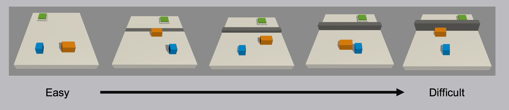
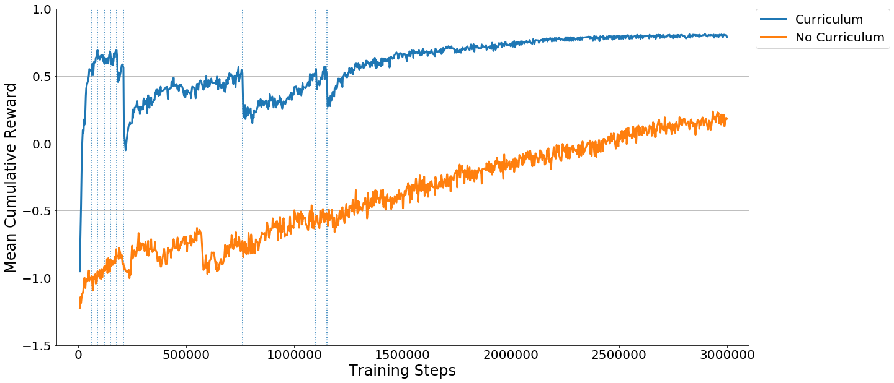

Training with Curriculum Learning
Sample Environment
Imagine a task in which an agent needs to scale a wall to arrive at a goal. The starting point when training an agent to accomplish this task will be a random policy. That starting policy will have the agent running in circles, and will likely never, or very rarely scale the wall properly to the achieve the reward. If we start with a simpler task, such as moving toward an unobstructed goal, then the agent can easily learn to accomplish the task. From there, we can slowly add to the difficulty of the task by increasing the size of the wall, until the agent can complete the initially near-impossible task of scaling the wall. We are including just such an environment with ML-Agents 0.2, called Wall Area.

Demonstration of a curriculum training scenario in which a progressively taller wall obstructs the path to the goal.
To see this in action, observe the two learning curves below. Each displays the reward over time for an agent trained using PPO with the same set of training hyperparameters. The difference is that the agent on the left was trained using the full-height wall version of the task, and the right agent was trained using the curriculum version of the task. As you can see, without using curriculum learning the agent has a lot of difficulty. We think that by using well-crafted curricula, agents trained using reinforcement learning will be able to accomplish tasks otherwise much more difficult.

How-To
So how does it work? In order to define a curriculum, the first step is to decide which
parameters of the environment will vary. In the case of the Wall Area environment, what
varies is the height of the wall. We can define this as a reset parameter in the Academy
object of our scene, and by doing so it becomes adjustable via the Python API. Rather
than adjusting it by hand, we then create a simple JSON file which describes the
structure of the curriculum. Within it we can set at what points in the training process
our wall height will change, either based on the percentage of training steps which have
taken place, or what the average reward the agent has received in the recent past is.
Once these are in place, we simply launch ppo.py using the –curriculum-file flag to
point to the JSON file, and PPO we will train using Curriculum Learning. Of course we can
then keep track of the current lesson and progress via TensorBoard.
{
"measure" : "reward",
"thresholds" : [0.5, 0.5, 0.5, 0.5, 0.5, 0.5, 0.5, 0.5, 0.5],
"min_lesson_length" : 2,
"signal_smoothing" : true,
"parameters" :
{
"min_wall_height" : [0.0, 0.5, 1.0, 1.5, 2.0, 2.5, 3.0, 3.5, 4.0, 4.5],
"max_wall_height" : [1.5, 2.0, 2.5, 3.0, 3.5, 4.0, 4.5, 5.0, 5.5, 6.0]
}
}
measure- What to measure learning progress, and advancement in lessons by.reward- Uses a measure received reward.progress- Uses ratio of steps/max_steps.
thresholds(float array) - Points in value ofmeasurewhere lesson should be increased.min_lesson_length(int) - How many times the progress measure should be reported before incrementing the lesson.signal_smoothing(true/false) - Whether to weight the current progress measure by previous values.- If
true, weighting will be 0.75 (new) 0.25 (old).
- If
parameters(dictionary of key:string, value:float array) - Corresponds to academy reset parameters to control. Length of each array should be one greater than number of thresholds.